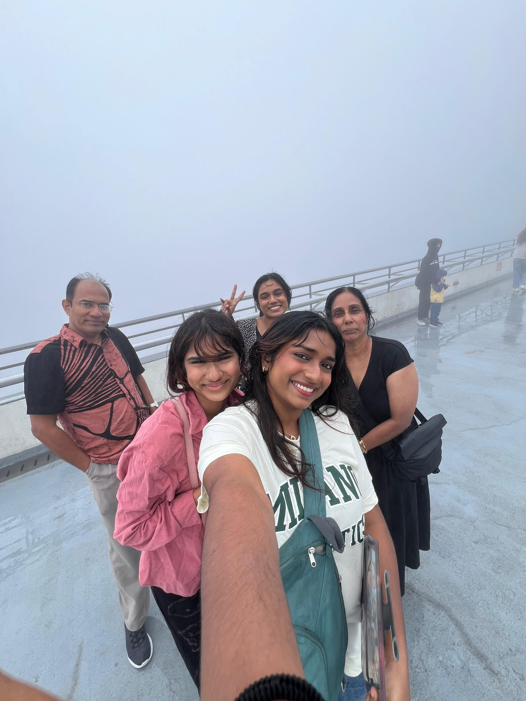
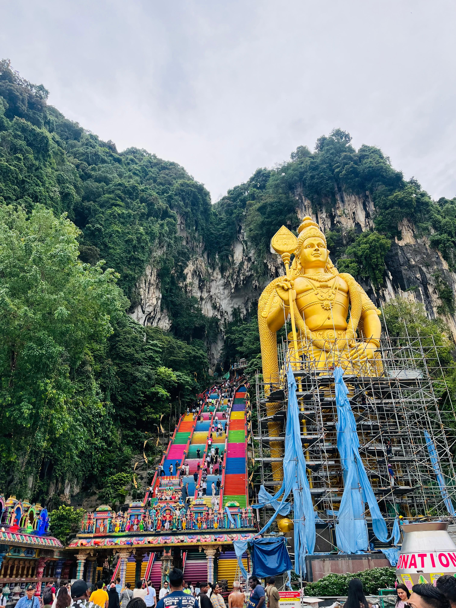

Malaysia is a fascinating country in Southeast Asia that offers a unique "two-in-one" experience. It is split into two main landmasses: Peninsular Malaysia, which shares a border with Thailand, and East Malaysia (Malaysian Borneo). Malaysia is a true melting pot of cultures, primarily composed of Malays, Chinese, and Indians, along with numerous indigenous groups like the Iban and Kadazan. Harmony in Diversity: This multiculturalism is reflected in the architecture, where modern skyscrapers sit alongside ancient temples, mosques, and churches. Festivals: Because of its diverse population, Malaysia celebrates a wide array of festivals, including Hari Raya, Chinese New Year, and Deepavali. Kuala Lumpur is the capital city is home to the famous Petronas Twin Towers, which were once the tallest buildings in the world. It’s a bustling hub of shopping malls and nightlife. UNESCO Heritage Sites: Cities like George Town (Penang) and Melaka offer a glimpse into the colonial past with colorful street art, historic shophouses, and rich maritime history. Malaysian cuisine is often considered some of the best in the world because it blends flavors from all its ethnic groups. Nasi Lemak is often called the national dish, it consists of fragrant rice cooked in coconut milk, served with sambal, anchovies, and peanuts. Penang is world-renowned for its street food, such as Char Kway Teow (stir-fried noodles) and Assam Laksa. Malaysia is one of the most "megadiverse" countries on Earth. Taman Negara is one of the oldest deciduous rainforests in the world, estimated to be over 130 million years old. In East Malaysia, you can find the Orangutan in its natural habitat and visit Mount Kinabalu, one of the highest peaks in Southeast Asia. The country is famous for its stunning islands like Langkawi, Perhentian, and Sipadan, which offer world-class diving and pristine white beaches. If you want to escape the tropical heat, Malaysia has several "hill stations" like Cameron Highlands and Genting Highlands. Cameron Highlands: Famous for its tea plantations, strawberry farms, and cooler, misty climate. Genting Highlands: Known as the "City of Entertainment," featuring theme parks and the country's only legal land-based casino.

